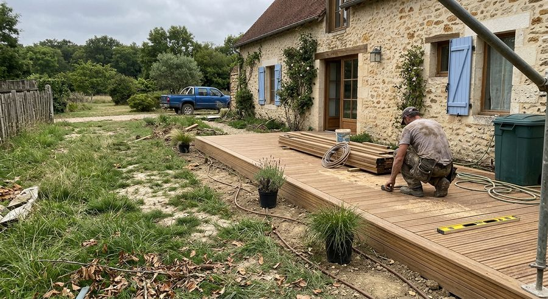
Terrasses
Création de terrasses pour prolonger la maison vers le jardin.
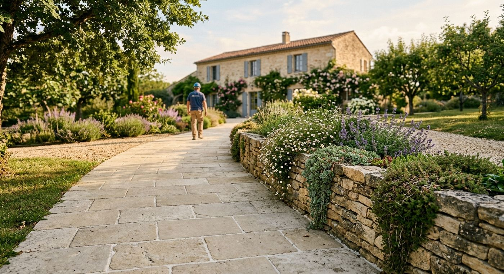
Antoine Garden Care aménage et entretient les jardins de Chatou et de ses environs. Parlez-nous de votre projet, nous revenons vers vous.
Du projet de terrasse à la tonte de la pelouse, deux grands volets pour que votre extérieur reste agréable toute l'année.

Création de terrasses pour prolonger la maison vers le jardin.
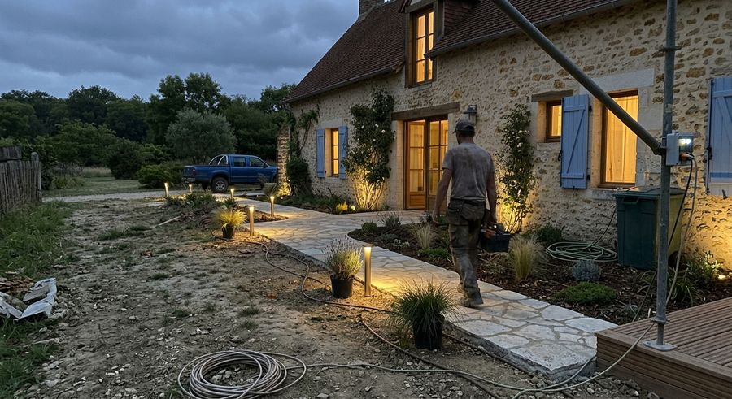
Allées dallées ou pavées, éclairées et intégrées aux massifs.
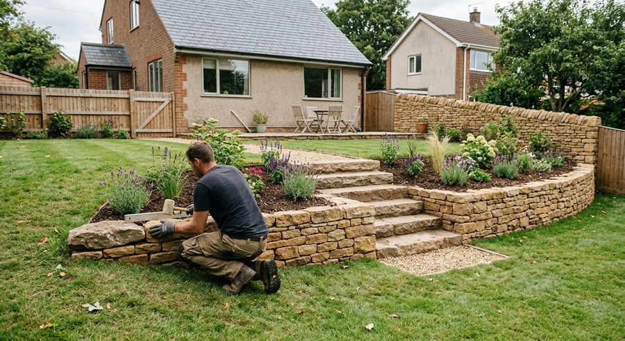
Murets, marches et soutènements en pierre.
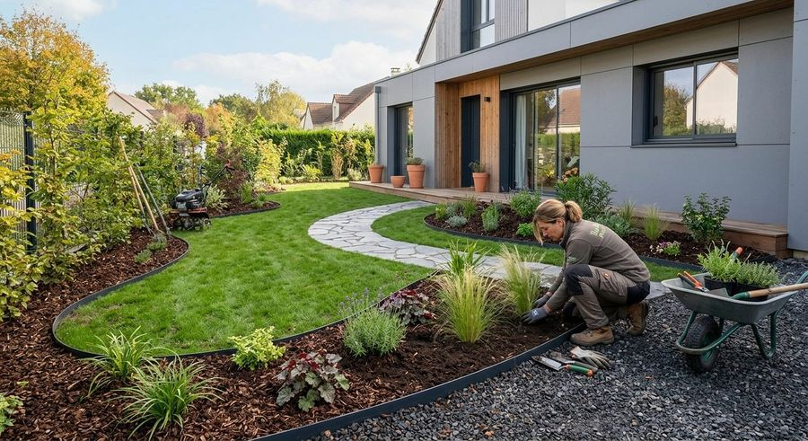
Création d'espaces verts, massifs, bordures et plantations.
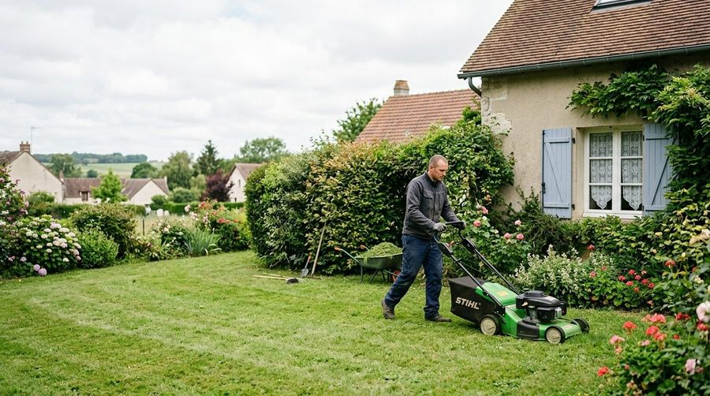
Pelouse régulière et bordures nettes.
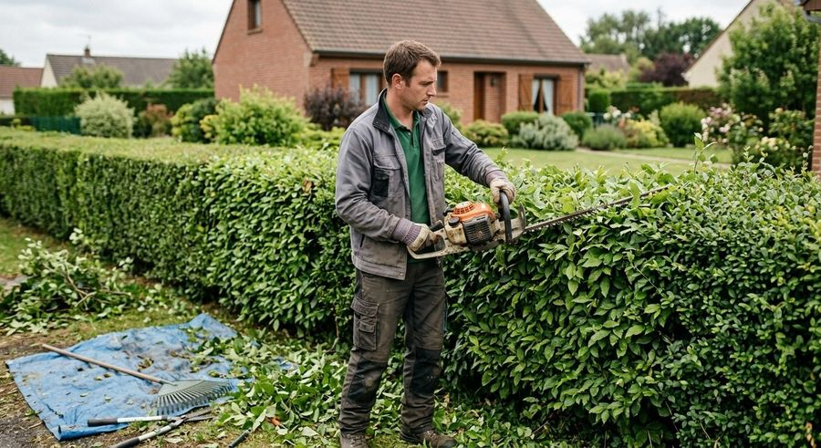
Haies droites et denses, sans dégâts pour le voisinage.
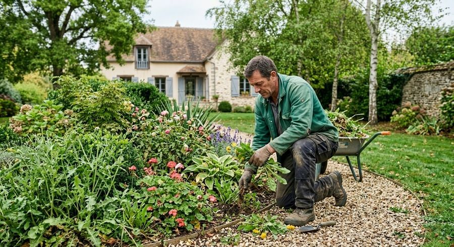
Massifs propres tout au long de la saison.
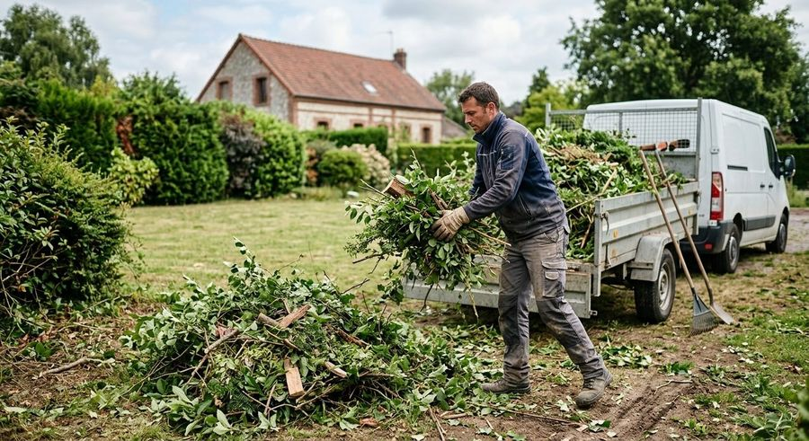
Évacuation des tailles et des feuilles après intervention.
Un appel pour comprendre vos envies, votre terrain et votre usage du jardin.
Le projet est dessiné et présenté avant le début du chantier.
Le chantier est mené jusqu'au bout, puis l'entretien peut prendre le relais.
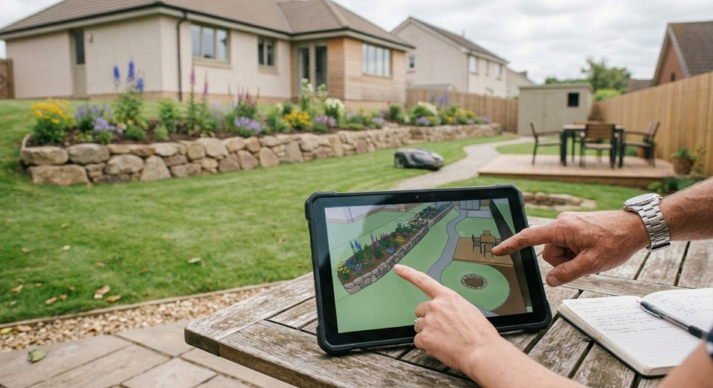
Antoine Garden Care est une entreprise d'aménagement paysager basée dans les Yvelines. Pour toute demande, le plus simple est de nous appeler.
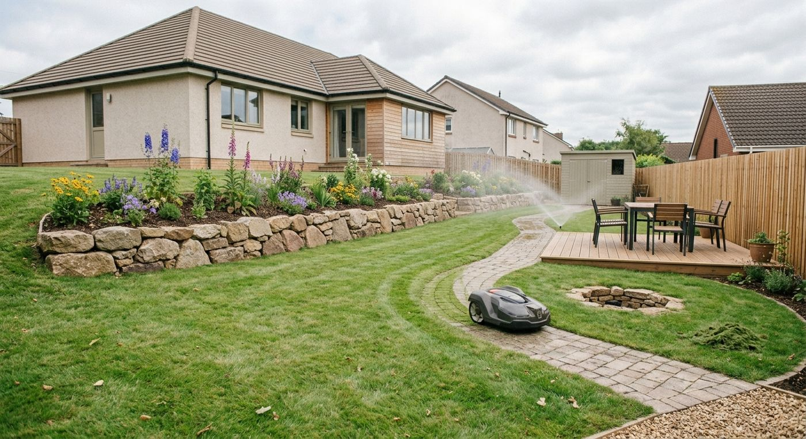
Décrivez-nous votre projet par téléphone : nous vous répondons et convenons de la suite avec vous.